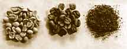

|
Tipos de Café |
La planta del café es originaria de Africa (Etiopia), aunque los primeros en utilizar el café tal y como lo conocemos hoy en día fueron los árabes.
Las variedades del café que nos podemos encontrar son:
|  |
Es la especie original. Surgió en la región de la actual Etiopía. Es la más cultivada (aproximadamente el 75 % de la producción mundial), aunque requiere condiciones más exigentes de cultivo. Su sabor es más complejo y contiene más sutilezas respecto del robusta.
En el café lavado se emplea agua principalmente para remover el mucílago, luego de que el café haya fermentado por un tiempo, con agua turbulenta.
Es la especie original. Surgió en la región de la actual Etiopía. Es la más cultivada (aproximadamente el 75 % de la producción mundial), aunque requiere condiciones más exigentes de cultivo. Su sabor es más complejo y contiene más sutilezas respecto del robusta.
Se conserva la cereza con el grano y no hay mucha manipulación del café mientras se seca.
Originario de la República Democrática del Congo (antes «Congo Belga»), el cafeto robusta es una planta más resistente y menos exigente a la hora de sus condiciones de cultivo. Así, es un cultivo que rinde más, ya que puede ser cultivado en terrenos llanos, lo que aumenta la cantidad de plantas por superficie. Es de sabor intenso, con mayor contenido de cafeína (dos veces más que el arábigo2) y con mayor acidez. Resulta una infusión más densa (con más cuerpo). Es menos aromático y más simple respecto del arábica. Es la especie con que se fabrica casi la totalidad de los cafés instantáneos y los molidos económicos para cafeteras de filtro.
El caracolillo es una variedad de arábica que viene a ser una mutación surgida como consecuencia de la deformación de la cereza que únicamente da un grano de café por cereza, en vez de dos granos de café como los demás. Característico por la forma del grano que como su nombre indica se enrosca entre si, adoptado forma de caracola.